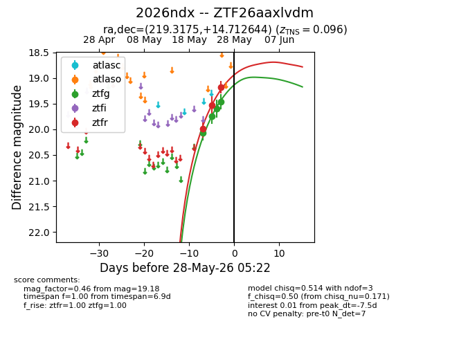
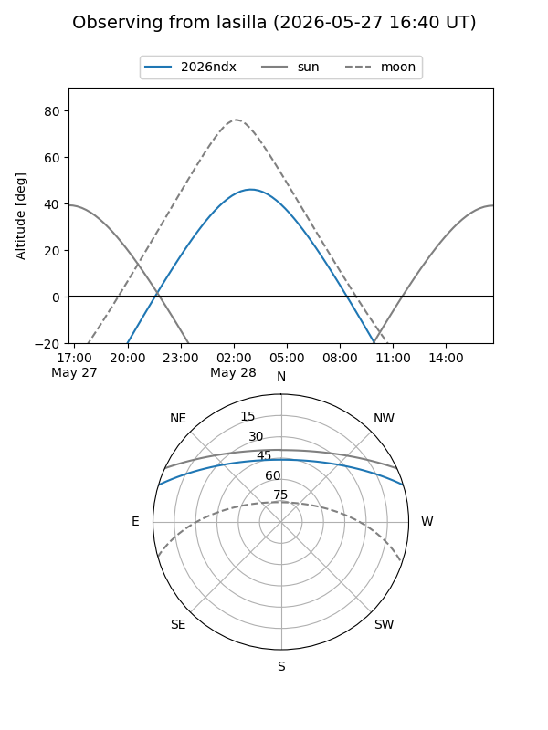
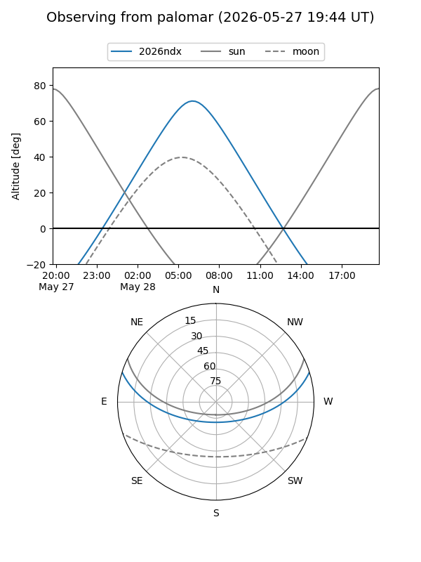
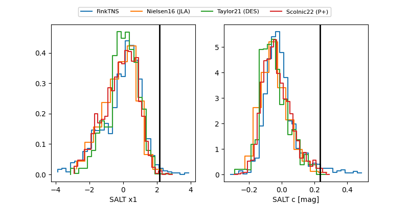

2026ndx
Target 2026ndx at 2026-05-28 05:23
Aliases and brokers:
lsst-FINK: link
lsst-Lasair: link
lsst-ALeRCE: link
ztf-FINK: link
ztf-Lasair: link
ztf-ALeRCE: link
TNS: link
YSE: link
alt names
ZTF26aaxlvdm (ztf,fink_ztf)
2026ndx (tns,yse)
Coordinates:
equatorial (ra, dec) = 219.3175,+14.71264
equatorial (HMS+DMS) = 14:37:16.21,+14:42:45.52
galactic (l, b) = (11.5404,+62.43093)
Flags:
confirmed ia: True
TNS confirmed: SN Ia
TNS redshift: 0.096
Photometry:
last ztfg=19.46, ztfr=19.18
4 ztfg, 3 ztfr detections
Lightcurve

Visibility


Additional plots
